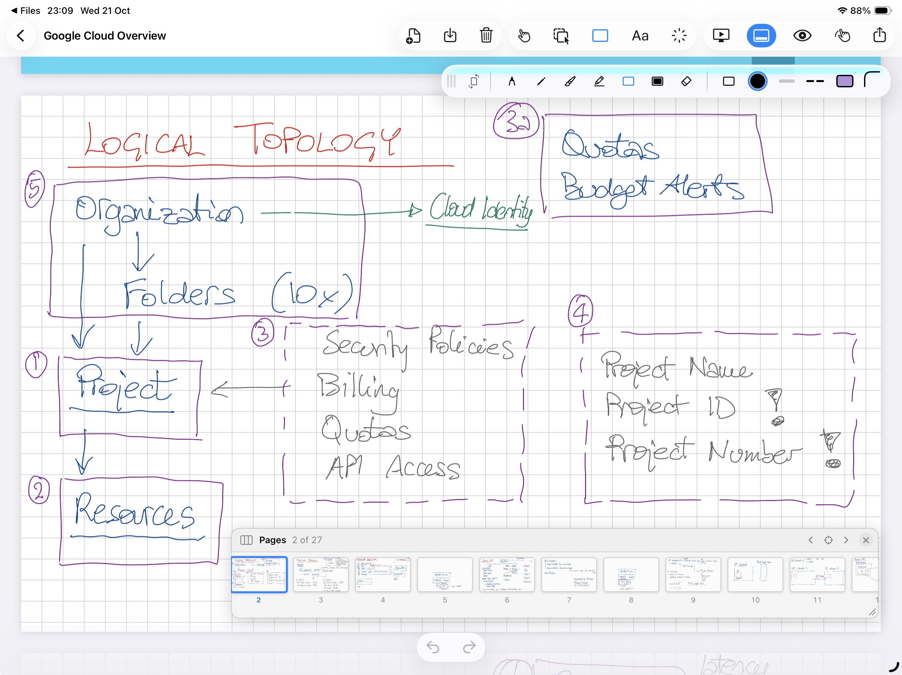
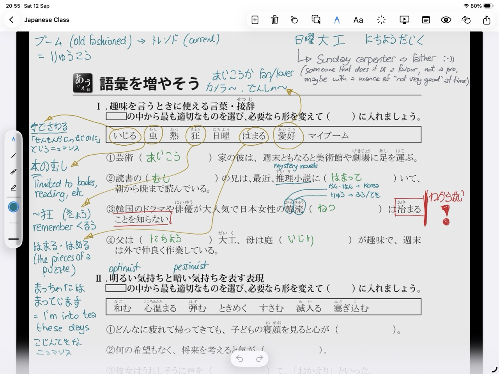
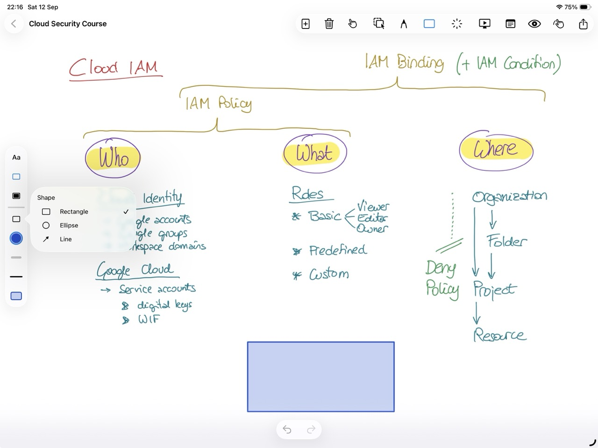
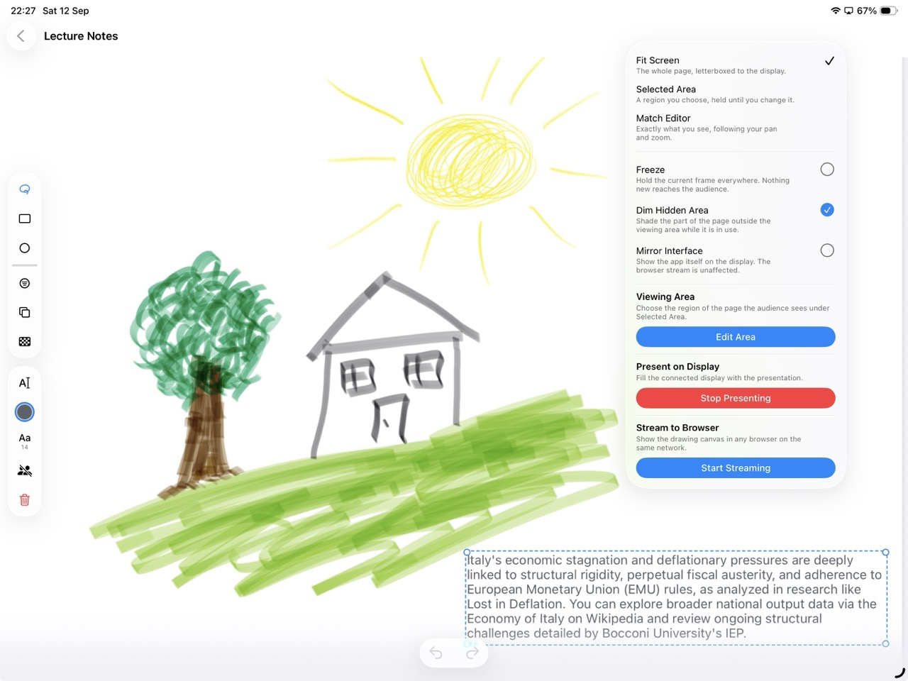
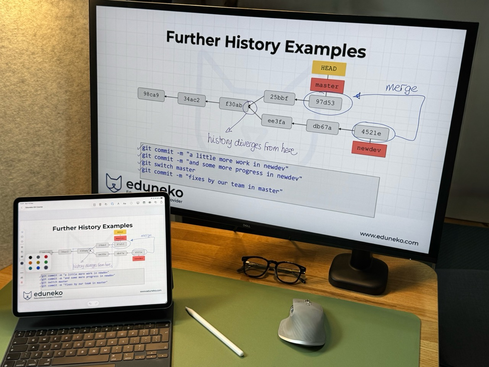
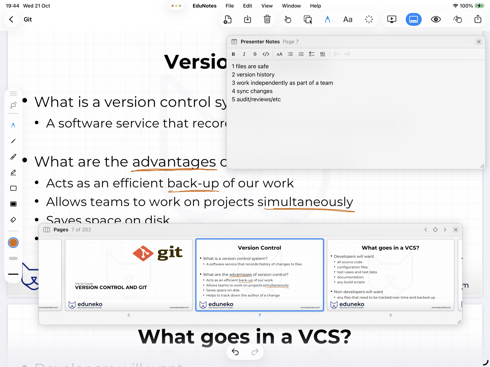
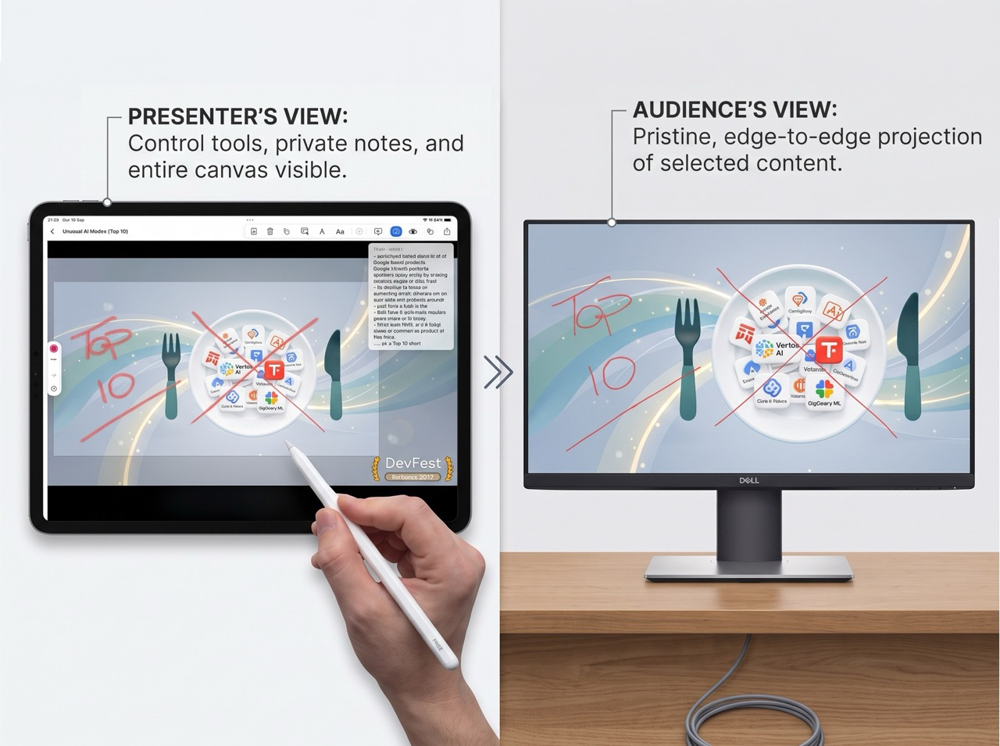
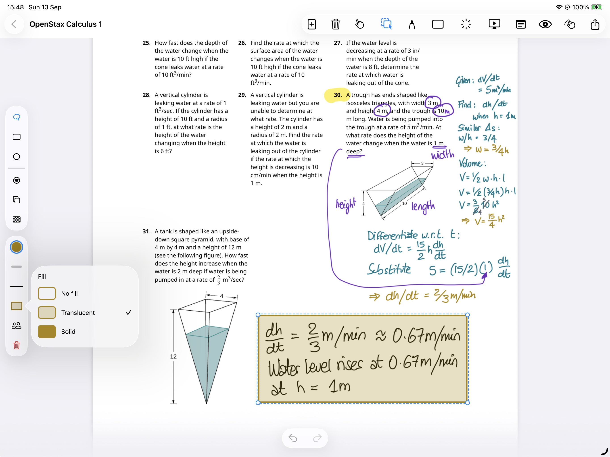
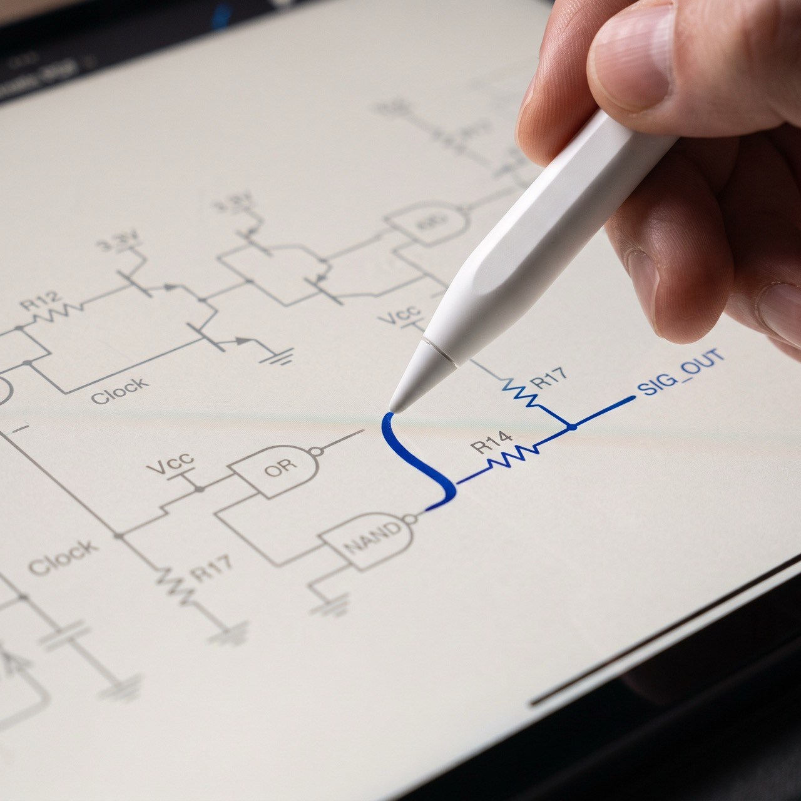

Teachers
Teach from the page.
Turn lesson plans into living whiteboards. Write over diagrams and keep your private teaching notes visible only to you.

EduNotes is the upcoming native workspace for teachers, trainers, speakers, and students. Annotate PDFs naturally with Apple Pencil and present pure, borderless content to any screen.



Purpose-built for presenting & thinking
Traditional presentation tools force you into rigid slides, while generic PDF readers clutter your audience's view with toolbars and menus. EduNotes bridges the gap with a clean, dual-display engine designed around how you actually explain ideas.

Teachers
Turn lesson plans into living whiteboards. Write over diagrams and keep your private teaching notes visible only to you.

Trainers
Break away from rigid training decks to answer unexpected trainee questions visually directly on your courseware.

Speakers
Present clean visual feeds to the venue screen while your navigation, toolbars, and cues remain private on your iPad.

Students
Solve problem sets, mark up lecture notes, and present your findings cleanly during group work.

True zero-chrome stage feed — to a connected display, or cast straight to any browser.

Apple Pencil vector ink engine.
Device-first document ownership.